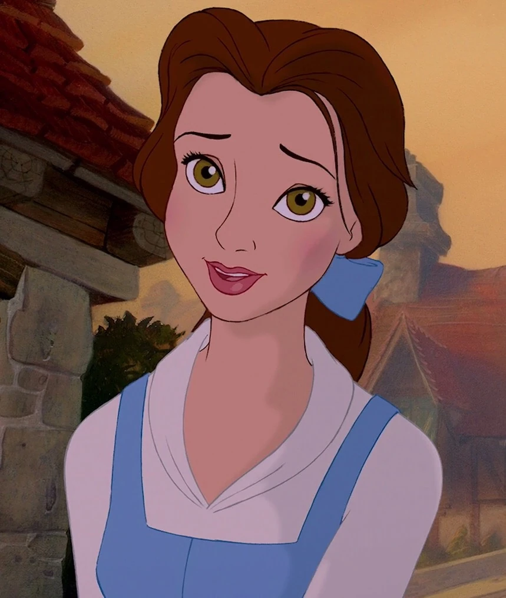
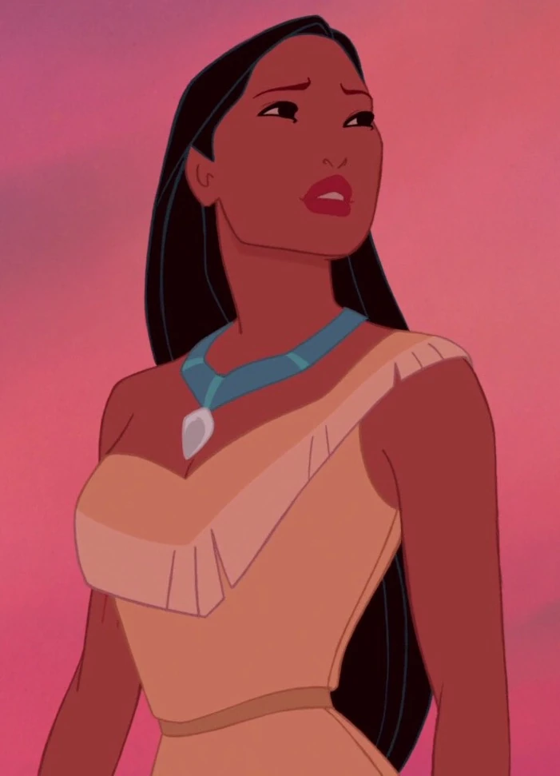
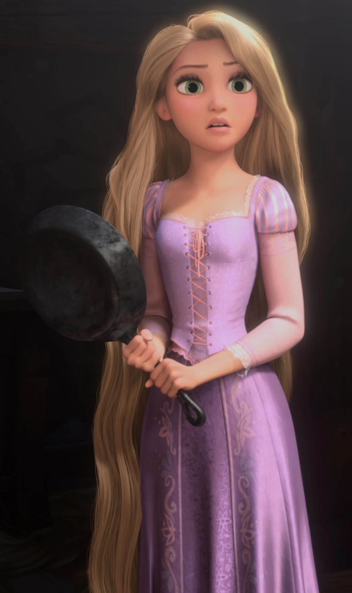
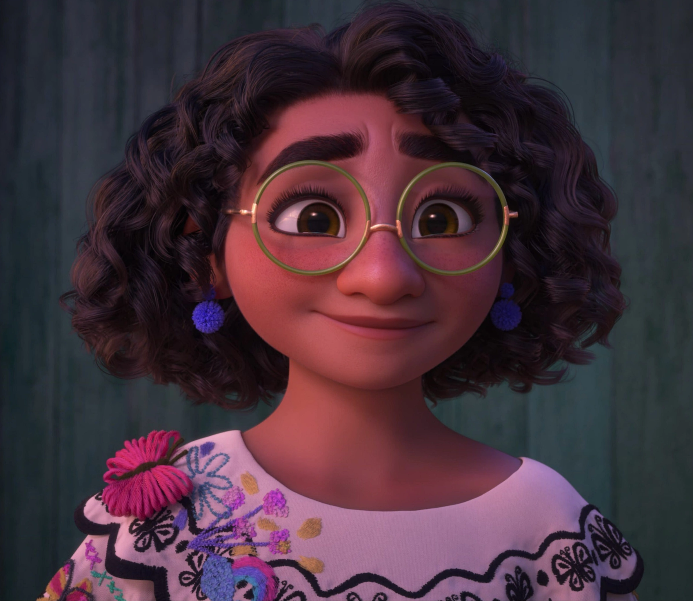

Disney Characters
| Image | Information | Traits |
|---|---|---|
|  |
Belle, from Beauty and the Beast, is a loving woman who fell in love with a beast under a curse. She loves reading books as much as she loves her dad, who she saved by taking his place locked up in the castle. |
|
 |
Fa Mulan, from the movie Mulan, is the daughter who took place of her father in the war because of his sickness. Undercover as a male, she was able to showcase her skills, earn respect, and win the war against the antagonists. |
|
|  |
Pocahontas, from the movie Pocahontas, is a curious girl from a Native American tribe. She earned respect and was able to find love, one in her own land and another when she was in England. |
|
|  |
Rapunzel, from the movie Tangled, is a young free spirit who has been locked up isolated in a tower, unable to cut her hair because of her guardian. She wants to know more about the outside world, and was able to after meeting a certain someone. |
|
|  |
Mirabel, from the movie Encanto, is a caring member of a magical family. Although she was the only one who didn't receive a gift, she was able to connect with her other family members at the end, and learn that there's uniqueness in everyone. |
|